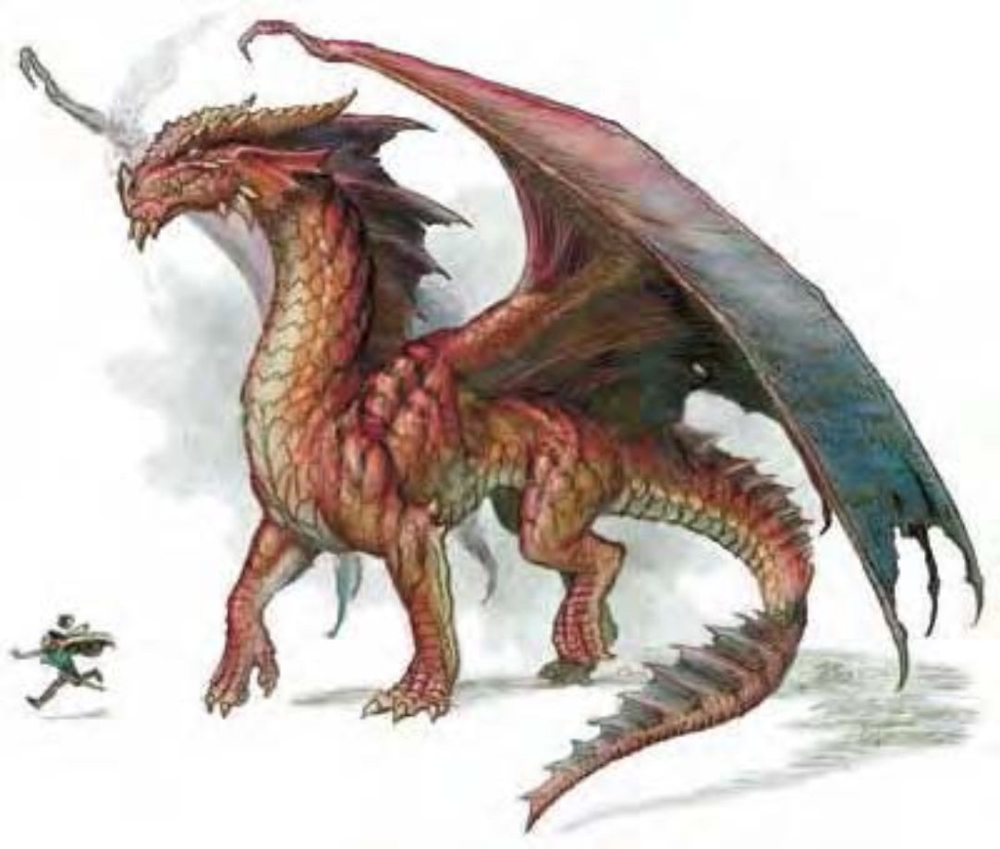

向后长出的角超过脖子，耳朵有皱边，脸颊、下颚和眉毛长有小角。红龙鼻似喙状，也长有一个小角。从头后到尾端有一排皱边。发出混合烟和硫磺的臭味，鳞片呈血红或腥红色。
红龙是所有龙里面最贪婪的，他们永远都在寻找增加自己宝藏收藏的机会。极为自信，从傲慢举止和轻蔑表情就看的出来。
雏龙鲜红色的鳞片小而光滑，很容易被掠食者或猎人发现，所以都待在地底，直到有能力照顾自己时才到外面活动。在少年阶段末期，鳞片会转为深红色，光滑的纹路也转为较暗的平滑纹路。随着年龄增长，鳞片会变大变厚，如金属般坚硬。颈部皱边及翅膀呈灰蓝色或紫灰色，颜色会随着年龄而变深。瞳孔会随着年龄而变淡，最年长的红龙拥有像熔炎球一样的眼睛。
红龙将巢穴建筑在极深的地底洞穴里，里面可微微感觉到的到他的体热，还弥漫着硫磺的气味。
红龙在附近总是有个位置较高的休息处可以凭高远眺，视线所及所有事物都视为自己的地盘。这种场所有时会侵入银龙的领域，因此红龙经常与银龙为敌。
红龙偏好肉食，最喜欢的食物是年轻的人类或精灵。有时候会魅惑村民为他定时献上活人作为祭品。
红龙的环境与社群环境：热暖带山脉。
组织：雏龙、幼龙、少年龙、青少年龙和青年龙：单独或数尾 (2-5)；成年龙、壮年龙、老年龙、极老龙、古龙、上古龙或太古龙：单独、成双或一家 (1-2，加上2-5个后代)。
挑战级数：雏龙4、幼龙5、少年龙7、青少年龙10、青年龙13、成年龙15、壮年龙18、老年龙20、极老龙21、古龙23、上古龙24、太古龙26。
宝藏：三倍标准。
阵营：总是混乱邪恶。
进化：雏龙8-9HD；幼龙11-12HD；少年龙14-15HD；青少年龙17-18HD；青年龙20-21HD；成年龙23-24HD；壮年龙26-27HD；老年龙29-30HD；极老龙32-33HD；古龙35-36HD；上古龙38-39HD；太古龙41+ HD。
等级修正值：雏龙+4；幼龙+5；少年龙+6；其余无。
| 资料栏位 | 极老红龙 (Great Wyrm Red Dragon) 巨型龙 (火系) |
| 生命骰 | 31d12+248 (449HP) |
| 先攻 | +4 |
| 速度 | 40英尺 (8格)、飞行200英尺 (笨拙) |
| 防御等级 | 36 (-4体型、+30天生)、接触6、措手不及36 |
| 基本攻击/擒抱 | +31 / +56 |
| 攻击 | 啮咬+40近战 (4d6+13) |
| 全力攻击 | 啮咬+40近战 (4d6+13) 及 2爪抓+35近战 (2d8+6) 及 2翼击+35近战 (2d6+6) 及 尾巴拍击+35近战 (2d8+19) |
| 占据/触及 | 20英尺 / 15英尺 (啮咬时20英尺) |
| 特殊攻击 | 喷吐攻击、碾压、威势、攫取、类法术能力、法术、扫尾 |
| 特殊能力 | 伤害减免15 / 魔法、黑暗视觉120英尺、对火焰 / “睡眠术” / 麻痹免疫、昏暗视觉、法术抗力25、易受寒冷伤害 |
| 豁免 | 强韧+25、反射+19、意志+25 |
| 属性 | 力量37、敏捷10、体质27、智力22、感知23、魅力22 |
| 技能与专长 | 估价+31、唬骗+37、专注+28、手艺 (制作陷阱) +18、躲藏+2、威吓+39、跳跃+48、神秘知识+31、地方知识+31、宗教知识+31、聆听+37、搜索+37、察言观色+37、法术辨识+39、侦察+37、使用魔法装置+22 专长：震山击、空袭、顺势斩、强力顺势斩、精通冲撞、精通先攻、钢铁意志、快速反射、猛力攻击、攫取、翻转 |
| 环境/阵营/CR | 热暖带山脉 / 总是混乱邪恶 / 挑战级数：21 |
红龙极具自信，所以很少会停下来先打量对手再行动。他们一旦发现目标就立刻决定是否加以攻击，并马上选用一个事先拟好的策略。为避免损坏目标身上所带的宝藏，红龙在攻击弱小生物时，会用爪抓或啮咬攻击，避免用喷吐攻击消灭他们。
喷吐攻击 (超自然)：红龙只有一种喷吐攻击，射出锥状火焰。60英尺锥状，18d10点火焰伤害，通过反射检定 (DC=33) 则伤害减半。
碾压 (特异)：范围20英尺×20英尺；对中型以下的生物造成4d6+19点敲击伤害，对手若未通过反射检定 (DC=33) 则被压制；啮咬加值+56。
威势 (特异)：半径270英尺，对HD30以下生物有效，通过意志检定 (DC=29) 则无效。
攫取 (特异)：啮咬加值+56；对中型以下的生物，爪抓每轮造成2d8+6点伤害；对大型以下生物，啮咬每轮造成4d6+13点伤害。如果龙不移动，则为每轮8d6+26点伤害。龙可抛掷攫取的生物90英尺，造成9d6点伤害。
扫尾 (特异)：半径30英尺半圆，体型小型以下的生物遭受2d6+19点敲击伤害，通过反射检定 (DC=33) 则伤害减半。
物品定位术 (类法术能力)：青少年或更老的红龙可以使用此能力，效果如同“物品定位术”，每天可使用的次数等同年龄层。
其他类法术能力：每天3次――“暗示” (老年龙或更老的龙)；每天1次――“寻找快捷方式” (古龙或更老的龙)、“感知位置” (太古龙)。
技能：“估价”、“唬骗”和“跳跃”为红龙的本职技能。
极老红龙类法术能力：每天9次――“物品定位术”；每天3次――“暗示”，施法者等级13，豁免检定DC=16+法术等级。
极老红龙法术（视同十三级术士）：
一般已知术士法术 (6/8/8/7/7/7/5；豁免检定DC=16+法术等级)：
零级――“秘法印记”、“舞光术”、“侦测魔法”、“幻音术”、“神导术”、“法师帮手”、“魔法伎俩”、“阅读魔法”、“提升抗力”；
一级――“魔法警报”、“冻寒之触”、“神眷”、“魔法飞弹”、“护盾术”；
二级――“轻灵术”、“治疗中度伤”、“黑暗术”、“侦测思想”、“隐形”；
三级――“深幽黑暗术”、“解除魔法”、“加速术”、“防护元素伤害”；
四级――“魅惑怪物”、“困惑术”、“复原术”、“法术免疫”；
五级――“破灭法阵”、“弱智术”、“幽影塑能术”；
六级――“酸雾术”、“医疗术”。
*亦可施展牧师法术及混乱、邪恶与火领域的法术，均视为秘法术。
| 年龄层 | 体型 | 生命骰 (HP) | 力 | 敏 | 体 | 智 | 感知 | 魅 | 基本攻击/擒抱 | 基本攻击 | 强韧 | 反射 | 意志 | 喷吐攻击 (DC) | 威势DC |
|---|---|---|---|---|---|---|---|---|---|---|---|---|---|---|---|
| 雏龙 | 中 | 7d12+14 (59) | 17 | 10 | 15 | 10 | 11 | 10 | +7 / +10 | +10 | +7 | +5 | +5 | 2d10 (15) | ― |
| 幼龙 | 大 | 10d12+30 (95) | 21 | 10 | 17 | 12 | 13 | 12 | +10 / +19 | +14 | +10 | +7 | +8 | 4d10 (16) | ― |
| 少年龙 | 大 | 13d12+39 (123) | 25 | 10 | 17 | 12 | 13 | 12 | +13 / +24 | +19 | +11 | +8 | +9 | 6d10 (19) | ― |
| 青少年龙 | 大 | 16d12+64 (168) | 29 | 10 | 19 | 14 | 15 | 14 | +16 / +29 | +24 | +14 | +10 | +12 | 8d10 (22) | ― |
| 青年龙 | 超大 | 19d12+95 (218) | 31 | 10 | 21 | 14 | 15 | 14 | +19 / +37 | +27 | +16 | +11 | +13 | 10d10 (24) | 21 |
| 成年龙 | 超大 | 22d12+110 (253) | 33 | 10 | 21 | 16 | 19 | 16 | +22 / +41 | +31 | +18 | +13 | +17 | 12d10 (26) | 24 |
| 壮年龙 | 超大 | 25d12+150 (312) | 33 | 10 | 23 | 18 | 19 | 18 | +25 / +44 | +34 | +20 | +14 | +18 | 14d10 (28) | 26 |
| 老年龙 | 巨 | 28d12+196 (378) | 35 | 10 | 25 | 20 | 21 | 20 | +28 / +52 | +36 | +23 | +16 | +21 | 16d10 (31) | 29 |
| 极老龙 | 巨 | 31d12+248 (449) | 37 | 10 | 27 | 22 | 23 | 22 | +31 / +56 | +40 | +25 | +17 | +23 | 18d10 (33) | 31 |
| 古龙 | 巨 | 34d12+306 (527) | 39 | 10 | 29 | 24 | 25 | 24 | +34 / +60 | +44 | +28 | +19 | +26 | 20d10 (36) | 34 |
| 上古龙 | 巨 | 37d12+370 (610) | 41 | 10 | 31 | 24 | 25 | 24 | +37 / +64 | +48 | +30 | +20 | +27 | 22d10 (38) | 35 |
| 太古龙 | 超巨 | 40d12+400 (660) | 45 | 10 | 31 | 26 | 27 | 26 | +40 / +73 | +49 | +32 | +22 | +30 | 24d10 (40) | 38 |
| 年龄层 | 速度 | 先攻权 | 防御等级 | 特殊能力 | 施法者等级 | SR |
|---|---|---|---|---|---|---|
| 雏龙 | 40英尺、飞行150英尺 (不良) | +0 | 16 (+6天生)、接触10、措手不及16 | 对火焰免疫、易受寒冷伤害 | ― | ― |
| 幼龙 | 40英尺、飞行150英尺 (不良) | +0 | 18 (-1体型、+9天生)、接触9、措手不及18 | 对火焰免疫、易受寒冷伤害 | ― | ― |
| 少年龙 | 40英尺、飞行150英尺 (不良) | +0 | 21 (-1体型、+12天生)、接触9、措手不及21 | 对火焰免疫、易受寒冷伤害 | 1级 | ― |
| 青少年龙 | 40英尺、飞行150英尺 (不良) | +0 | 24 (-1体型、+15天生)、接触9、措手不及24 | “物品定位术” | 3级 | ― |
| 青年龙 | 40英尺、飞行150英尺 (不良) | +0 | 26 (-2体型、+18天生)、接触8、措手不及26 | 伤害减免5 / 魔法 | 5级 | 19 |
| 成年龙 | 40英尺、飞行150英尺 (不良) | +0 | 29 (-2体型、+21天生)、接触8、措手不及29 | 伤害减免5 / 魔法 | 7级 | 21 |
| 壮年龙 | 40英尺、飞行150英尺 (不良) | +0 | 32 (-2体型、+24天生)、接触8、措手不及32 | 伤害减免10 / 魔法 | 9级 | 23 |
| 老年龙 | 40英尺、飞行200英尺 (笨拙) | +0 | 33 (-4体型、+27天生)、接触6、措手不及33 | “暗示” | 11级 | 24 |
| 极老龙 | 40英尺、飞行200英尺 (笨拙) | +0 | 36 (-4体型、+30天生)、接触6、措手不及36 | 伤害减免15 / 魔法 | 13级 | 26 |
| 古龙 | 40英尺、飞行200英尺 (笨拙) | +0 | 39 (-4体型、+33天生)、接触6、措手不及39 | “寻找快捷方式” | 15级 | 28 |
| 上古龙 | 40英尺、飞行200英尺 (笨拙) | +0 | 42 (-4体型、+36天生)、接触6、措手不及42 | 伤害减免20 / 魔法 | 17级 | 30 |
| 太古龙 | 40英尺、飞行200英尺 (笨拙) | +0 | 41 (-8体型、+39天生)、接触2、措手不及41 | “感知位置” | 19级 | 32 |